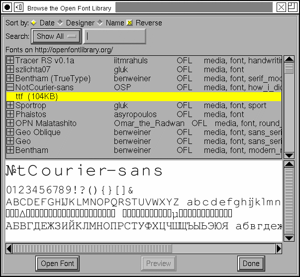

Open Font Library
The Open Font Library is a web-site which allows you to download free/libre/open fonts made by others and to upload your own.
FontForge has commands to make it easy to
- Browse the library, generating font previews, and downloading fonts.
- Upload a completed font to the library.
Browsing the Library
The first time this dialog starts it will download a list of all fonts on the library. This is an incremental process which can take a while. The information is cached and subsequent invocations merely check for any additional fonts.
The display shows the font's name, designer, license and the set of tags attached to the font by the designer (and by OFLib itself). If you open an entry (by clicking on the emboxed-plus sign you will see the separate files you may download.
In the example at right the font "NotCourier-Sans" from Open Source Publishing is selected. This font is released under the Open Font License designed by SIL with the help of the community. The package just contains a truetype file (which is 104Kb in size).
If you click on a font and a preview for that font has already been downloaded then you will see the preview; otherwise you may press the [Preview] button to download it (if the package contains no preview then fontforge will download the font itself and generate a preview from it).
If you press the [Open Font] button then fontforge will download and open the selected font file.
You may chose to sort the list of fonts by date, designer, or font name. You may also sort it in reverse order. The default is to order fonts in reverse chronological order -- so the most recent font creations appear first in the list.
You may restrict the list so that it only shows fonts by a certain designer,
with a specified license, with certain tags, ...
 Uploading
Fonts
Uploading
Fonts
When you are generating a font you have the option of uploading it to the open font library. Only do this to a release version of the font -- it isn't easy to upgrade an entry later.
Before doing this you must register with the Open Font Library and acquire a username/password combination.
Checking the [*] Upload to Open Font Library will expand the Generate Fonts dialog with fields containing the information needed to upload a font to the library.
First (obviously) you need the username/password combination you acquired earlier. FontForge will remember these for you if you want, but the information is barely encrypted when FF stores it (of course the password goes across the internet as plain text, so having minimal encryption on your computer may be the least of your worries).
You need to identify the font with a name on the OFLibrary site. Generally the fontname will do, but you could chose something else.
If you had any collaborators, or if you based this on some earlier work list these people in "Artists".
The OFLib identifies fonts by keyword tags. You may list as many comma separated tags as you wish, and you may use pretty much anything as a tag. It should be something that will help identify your font of course. So "sans_serif", "bold", "condensed", "italic", might all be good tags. The server will automagically add tags containing the font type (otf/ttf/etc.) and the license.
You also need to specify a description of the font.
You must specify a license. The OFLib currently accepts only two licenses (Open Font License and Public Domain). If your font is not licensed with either of these you should not upload it.
Linux packagers appreciate it if you also include the license in a separate text file. If your font contains a license (see Element->Font Info->TTF Names->License) then FontForge will extract this information and send it up as a separate file. (Currently the OFLib does not accept this information. I hope that will change).
It your font is released under the Open Font License then you should also upload a FontLog file. Again FontForge will do that for you if your font has FONTLOG information (Element->Font Info->FontLog). (Currently the OFLib does not accept this information either).
You should also submit a font preview, an image of your font in use. You may create one yourself and browse for it on the disk (using the [...] button), or you may ask fontforge to generate a somewhat generic one for you. FontForge searches the font for all the scripts in it and then displays the alphabets of those scripts (at least that's what it does for alphabets, for CJK it will display a small selection of the defined glyphs). You can see an example of a fontforge generated preview for NotCourier-Sans above
Finally you may mark that your font is "Not safe for use in a work environment" I'm not sure what font would fall into that catagory (I think it is part of the common interface with the open clip art library), perhaps a font where the glyph stems were nude figures or some such.
Pressing [Save] will first save the font on the local disk, and then upload it to the OFLib -- obviously you must be connected to the internet for this to work.